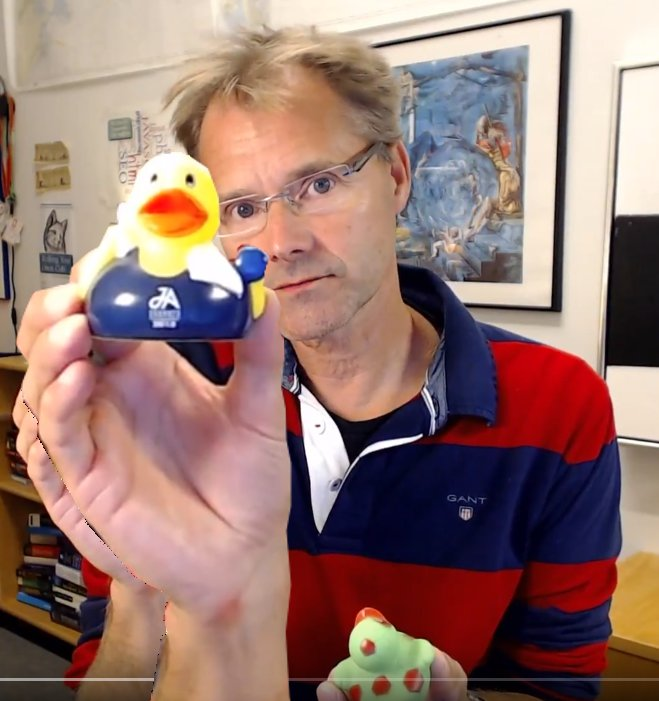

Om Mig Själv
Så, en presentation är en bra början. Skriv några ord om dig själv. Jag börjar.

Mitt namn är Mikael Roos. Född och uppvuxen i Bankeryd, Småland, strax utanför Jönköping, i ett villaområde som byggdes upp samtidigt som vi flyttade in där. Jag gillade landhockey och har spelat bandy och hockey samt gått bowlinggymnasiet i Nässjö. Jag har varit städare, diskare, kallskänka, servitör och kock. På ett bananskal landade jag i Ronneby när jag började högskolan 1990, när jag slutade fann jag min fru, barn och så vidare.
Programmering har alltid intresserat mig sedan 13-årsåldern och min första dator var en Spectravideo 328 med bandspelare. Numer är jag en allätare och använder både Windows, Linux och Mac.
Om jag skall nämna någon hobby, förutom webbprogrammering, så får det bli att bära sten på sommarstugetomten, och det finns sten så det räcker och blir över.
Till och från får jag för mig att börja på lite hobbies, ett år satsade jag på pokerspel, ett annat år var det geocaching och sedan turfing. De senaste hobbyarna är jakt, skogsbruk och lantbruk tillsammans med intelligenta hem samt att förstå grunderna för hur aktiemarknaden fungerar. Det finns så mycket skojiga saker att lära sig!
Vi syns och hörs!